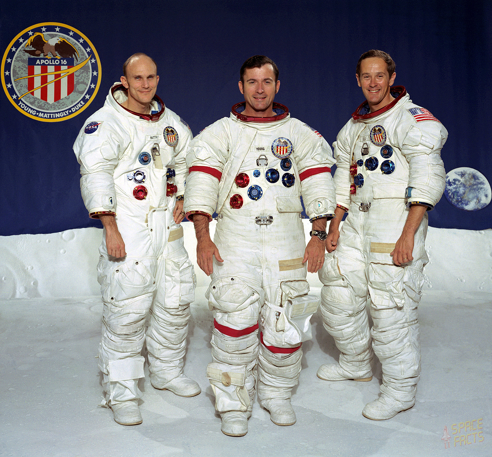

John Young was one of the most accomplished astronauts in NASA history. Before Apollo 16, he had already flown on Gemini 3, Gemini 10, and Apollo 10, making him one of the most experienced space travelers of his era.
As commander of Apollo 16, Young led the mission to the lunar highlands and became the ninth person to walk on the Moon. He was known for his calm demeanor, technical expertise, and exceptional piloting skills. During the mission, he helped conduct extensive geological exploration using the Lunar Rover and collected valuable lunar samples.
Young later commanded the first Space Shuttle mission (STS-1), becoming one of the few astronauts to play major roles in both the Apollo and Shuttle programs. His career made him a central figure in American space exploration history.
Thomas Mattingly is best known for his connection to Apollo 13: he was originally assigned to that mission but was replaced shortly before launch after exposure to illness. He later flew as Command Module Pilot on Apollo 16.
During Apollo 16, Mattingly remained in lunar orbit aboard the Command Module Casper while Young and Duke explored the surface. He conducted scientific experiments, photographed the Moon, and ensured the spacecraft remained ready for rendezvous and return operations.
On the journey home, Mattingly performed a deep-space spacewalk to retrieve film canisters from the Service Module, becoming one of the few astronauts to conduct an EVA so far from Earth. He later flew on the Space Shuttle and is remembered as one of NASA's most skilled command module pilots.
Charlie Duke became the tenth person to walk on the Moon during Apollo 16. Before his flight, he worked as a capsule communicator (CAPCOM) for Apollo 11 and was the voice who told Neil Armstrong and Buzz Aldrin, "You got a bunch of guys about to turn blue. We're breathing again." after the lunar landing.
On Apollo 16, Duke helped pilot the Lunar Module Orion to the surface and participated in three moonwalks. He helped deploy scientific instruments, drive the Lunar Rover, and collect important geological samples from the Descartes Highlands.
Duke remains one of the youngest astronauts to walk on the Moon and is known for his enthusiasm, energy, and dedication to sharing the story of lunar exploration with future generations.